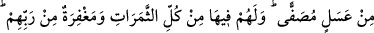

__WORD__ kelimesindeki “fe” harfi, makamın gerektirdiği mukadder bir ibareye atıf
içindir. Tabiî ki buradaki “men”, dinin delillerine sımsıkı sarılan müminlerden ibarettir.
Takdirî ibare şöyledir: “İş anlatıldığı gibi değil mi! Açık bir delil, mâlikinden ve
mürebbîsinden parlak bir burhan üzere olanla kötü işi kendisine süslendirilen bir olur
mu?” Şunu demek istemektedir: “Hidâyet üzere olanla dalâlete düşen eşit değildir.” __WORD__ (ehvâehüm) kelimesinde zamirin çoğul olması, “men” lafzının mânâsı
itibarıyladır. Nitekim âyetin başındaki ilk üç zamirin tekil oluşu da “men” edâtının lafzı
itibarıyla idi.
Âyette kalp ve nefis ehline işâret edilmektedir. Kalp ehlinin gönülleri kötü ahlâkın
paslarından tasfiye edilip temizlendiği için hakkın şâhidlerini gördüler ve bu hususta
basîret üzere oldular. Nefis ehline gelince, bid’atlar ve şeriata muhâlefet onlara
süslendi. Onlar itikâdî konularda ve bedenî amellerde hevâ ve heveslerine uydular,
merkepten daha aşağı duruma düştüler. Artık bunlar ne Allah’a ne de cennete ulaşırlar.
Ebû Osman şöyle demiştir: “Beyyine”, kişinin ilhamla vesvese arasını ayırabileceği
bir nurdur. Bu da ancak îmanda hakikat ehli olanlarda bulunur. Beyyinenin aslı
Peygamberimiz (s.a.)’e âiddir. Allah Teâlâ şöyle buyuruyor:
“And olsun Rabbinin büyük âyetlerinden bazılarını gördü.” (en-Necm 53/18)
“Gönül gördüğünde yanılmadı. (yalan söylemedi, gerçeği gördü).” (en-Necm
53/11)
Bazı büyükler şöyle demişlerdir: Peygamberimiz (s.a.)’e cem edilen ilimler hiçbir
peygambere cem edilmemiştir. Çünkü Peygamberimiz (s.a.)’in mazharı, Rahmânîdir.
Rahmân ise âlim isminden sonra sâdır olan ilk isimdir. Bütün ilim ve malumat, Rahman
isminin muhtevasında mevcuddur. İşte bundan dolayı dünya zîneti zâil ve fâni olduğu
için Peygamberimiz (s.a.)’e haram kılınmış, böylece o (a.s.) böyle fâni ve zâil olacak
bir ziynete bulaşmaktan men edilmiştir. Çünkü onun Rahmânî olan mazharı, bitme,
tükenme ve son bulmayla çelişmekte, dâimî ve ebedî olmaya muvafık düşmektedir.
Şâirin dediği gibi:
Bizden sedef gibi zâhir zînet isteme,
Biz evin içinde mücevher elde etmişiz.